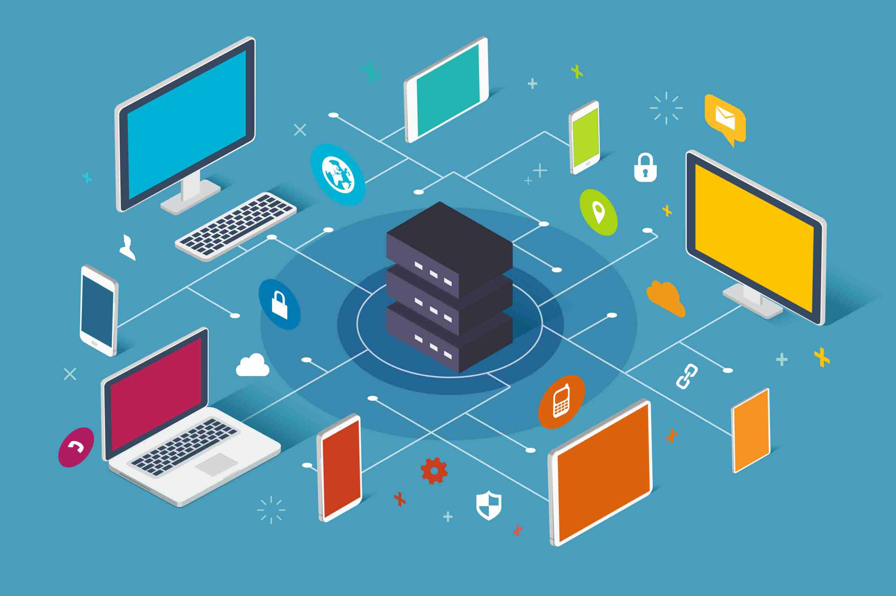

| Réseau | Le réseau informatique désigne les appareils informatiques interconnectés qui peuvent échanger des données et partager des ressources entre eux.
Ces appareils en réseau utilisent un système de règles, appelées protocoles de communication,
pour transmettre des informations sur des technologies physiques ou sans fil. |  |
| TCP/IP | TCP/IP est un protocole de liaison de données utilisé sur Internet pour permettre
aux ordinateurs et autres appareils d'envoyer et de recevoir des données. L'acronyme TCP/IP signifie Transmission Control Protocol/Internet Protocol.
Il permet aux appareils connectés à Internet de communiquer entre eux via les réseaux. |  |
| Routeur | Outil logiciel ou matériel qui assure le routage des données au sein d'un réseau. | |